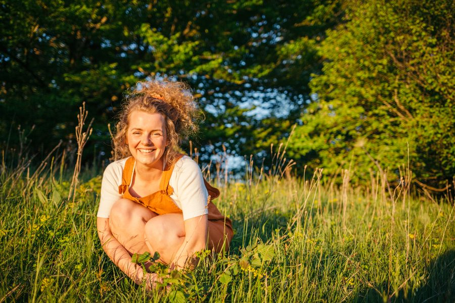

Ein Jahr, um in deiner Landschaft heimisch zu werden.
Die Earth Keeper’s Journey ist deine Reise durch den ganzen Jahreskreis — eingebettet in einen Kreis Gleichgesinnter, getragen von monatlichen Live-Treffen zu Neumond und einem Mitgliederbereich, der mit dir durchs Jahr wächst.

„Jetzt ist der Zeitpunkt gekommen, um wieder die Verbindung zur Erde zu leben — und unserer Verantwortung für sie mit Freude nachzukommen.“
Fünf Dinge auf einmal
Danach wirst du …
- den Jahresverlauf bewusst wahrnehmen — mit allen Sinnen
- die Jahreskreisfeste für dich, deine Familie, Freunde oder dein Wirken initiieren können
- Pflanzenfreundschaften knüpfen, die durchs ganze Jahr tragen
- dich zufriedener, zyklischer und als Teil der Natur fühlen

Fünf Wege durch das Jahr
Deine Journey ist ein Zusammenspiel aus Online-Impulsen und ganz konkreter Umsetzung draußen, in deiner eigenen Landschaft.
Das ist alles dabei
- 12 Live-Calls — immer zu Neumond, durch das ganze Jahr
- Ein exklusiver Mitgliederbereich mit Videos, Audios und Workbook zum Nachlesen und Vertiefen
- Deine Netzwerkkarte — regional vernetzt mit Gleichgesinnten
- Ein Erlebnisbuddy aus der Gruppe an deiner Seite, das ganze Jahr
- Drei Gastexpertinnen-Workshops zu besonderen Themen
Stimmen aus dem Kreis
Evelyn kommt mir vor wie ein uraltes, weises Wesen, von dem wir unbedingt das Wissen aufsaugen sollten. Sie gab mir das Vertrauen in die Natur zurück — ich bin endlich wieder viel im Garten und bestaune die Bewohner.
Ich liebe Evelyns natürliche, selbstverständliche Art. Ihr großer Wissensschatz, gepaart mit feinem Gespür für die Natur und die Menschen, hat diesen Kurs für mich besonders gemacht. Als Erdhüterin eine wichtige Inspiration.
Ich finde es einzigartig, wie Evelyn dich die Erde spüren lässt und dir Werkzeuge gibt, um mit diesem Gefühl zu wachsen — zum Unkraut zu werden und den eigenen Weg zu gehen.
Sei dabei, wenn die nächste Runde startet
Die nächste Journey beginnt zur Wintersonnwende. Trag dich unverbindlich auf die Vorfreude-Liste der Erdhüter:innen ein — du erfährst als Erste, wann es losgeht, und sicherst dir deinen Vorfreude-Bonus.
Unverbindlich, jederzeit abbestellbar. Anmeldung mit Bestätigungs-Mail (Double-Opt-in). Keine Cookies, kein Tracking.